1. 기본적인 스프링 툴을 설치하러 간다
java 11버전이 설치되어 있지않다면 설치 후 환경변수에 추가해준다
STS 3 설치 jdk 11.0.2 설치
2. 압축을 풀고 sts-3.9.18.RELEASE의 STS를 실행시킨다.
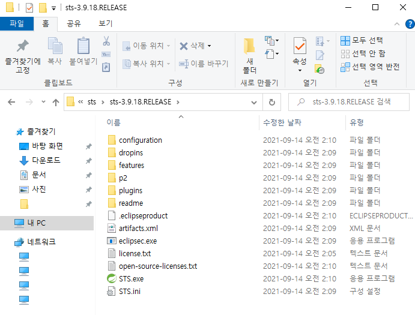
3. Windows-Preferences로 들어가서 Files 인코더 형식을 UTF-8로 바꾸어준다
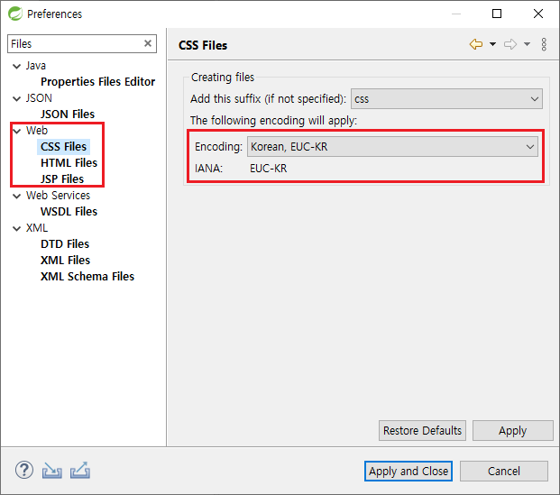
4. File-new-Spring Legacy Project를 새로 만들어준다
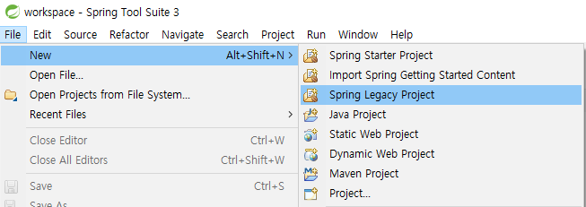
5. Configure templates에 들어가서 default 이외 모두 지워주고 대기한다
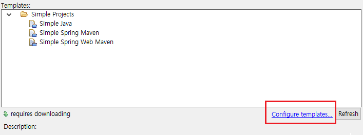
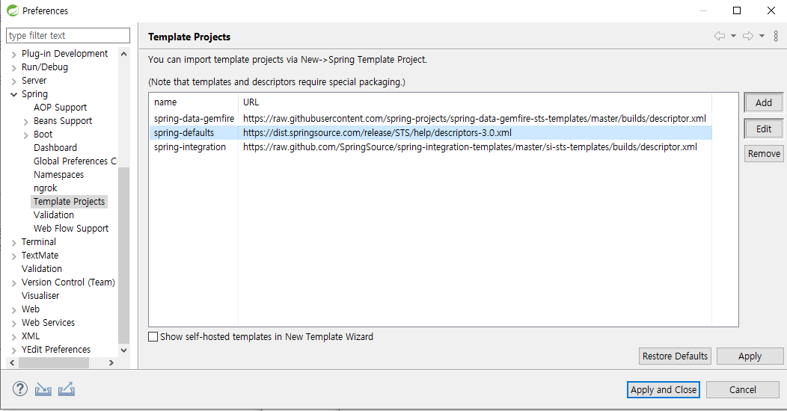
6. 로딩이 완료되면 Spring MVC Project를 선택하여 프로젝트를 만든다
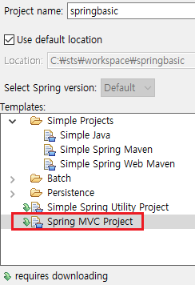
7. 임의의 패키지 이름을 설정하여 만들어 준다
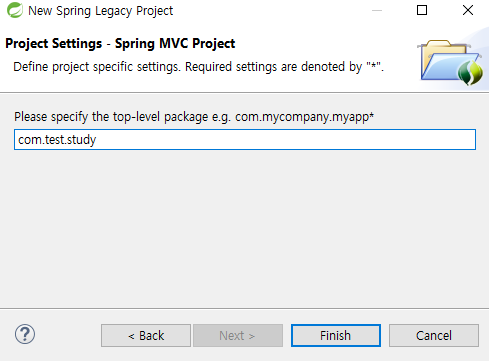
8. 프로젝트가 완성되면 maven을 받아오기때문에 다운로드를 대기한다
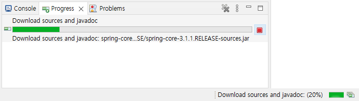
9. Spring프로젝트를 Tomcat 9.0과 연결해준다
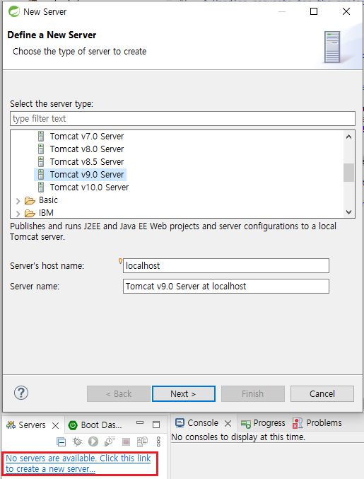
10. Tomcat 경로를 잡아준다
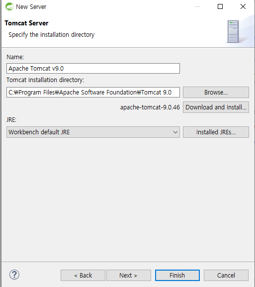
11. 기본적인 Tomcat의 포트를 8080이외로 설정해준다
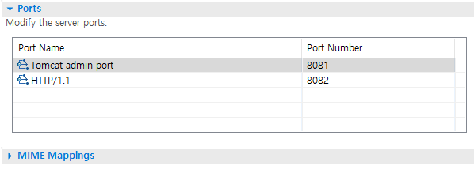
12. 모듈로 진입하여 Web Module을 추가해준다.
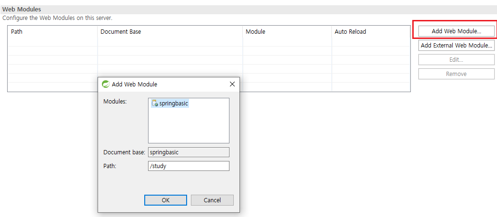
13. 프로젝트를 마우스 우클릭하여 Properties에서 Servlet때와 똑같이 서버 설정해준다
단 Spring은 java 하위버전에서 지원하지 않으므로 jdk11.0.2를 설치하고 11버전 사용
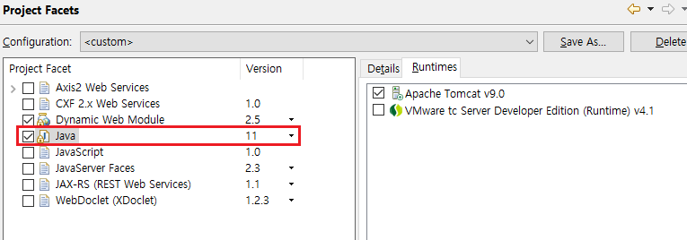
14. 마지막으로 임의의 jsp 파일을 만들어서 정상작동을 확인한다